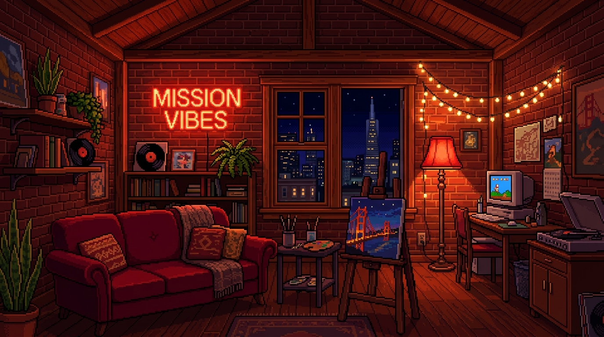

Trail Progress
Encounter 1 / 128
Sex Score
0 PTS
Health
100%
Polycule Team
1 Member
Condoms
2 / 2
🎭 CHOOSE YOUR SAN FRANCISCO HEDONIST PROFILE
🎲 Roll the dice: Select your character class to begin your San Francisco journey!

ACT I • 📍 Mission District Loft
Loading game narrative...
🏆 TOP 10 SAN FRANCISCO HIGH SCORES
| RANK |
INITIALS |
SEX SCORE |
DATE |